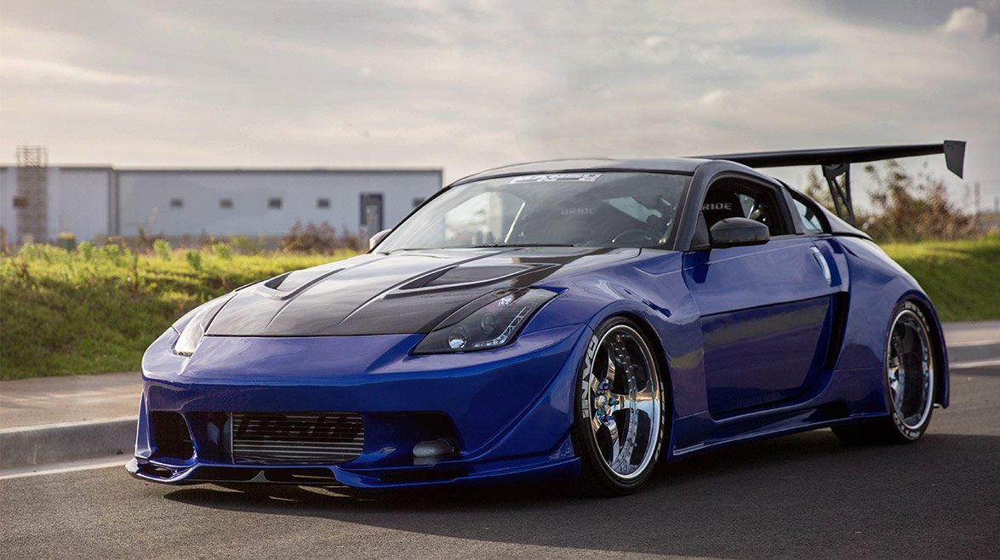
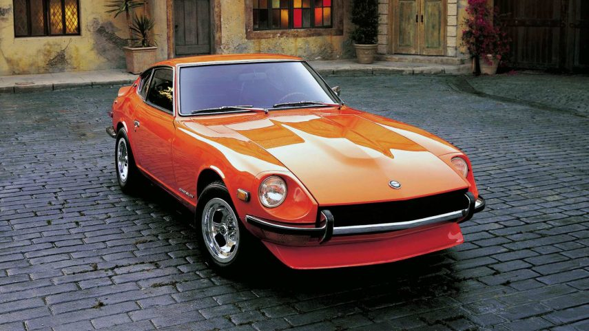
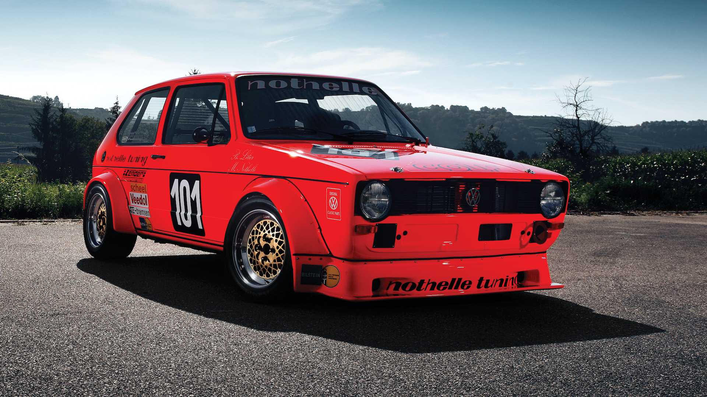

Classic
Aquila
VW The future has come
So we know your first question is "What is an Aquila?" It's an American-made fiberglass body company the produced complete kits to turn plain-Jane Beetle into a BMW M1-like exotic. In fact, the transformation is so extensive that there isn't anything from its VW roots still visible on the exterior. Instead, you have a low & sleek hood, pop up headlights, plenty of aggressive air inlets, and a sporty profile that will make people think this is a rare and expensive classic. And in fact, they are half-right. This is body #137, and it's believed that there were as few as 150 of these produced in total during the company's full run in the early 1980s. So when you have bright cream paint, brighter wire wheel covers, and a well-preserved body, you know that someone has taken care of this like a low-batch car should be. 1963 Volkswagen Aquila Gullwing. 1200cc air cooled 4 cylinder engine, 4-speed manual transmission, chrome wire wheels and more. Designed after the BMW M1. If you want a car nobody else has for not a lot of money, this is it! The Volkswagen Touareg is a mid-size luxury SUV produced by German automaker Volkswagen since 2002. The vehicle was named after the nomadic Tuareg people, inhabitants of the Saharan interior in North Africa. The Touareg's gasoline engines are a 3.2-liter V6 at 15º (VR6) with indirect injection and 220 or 240 hp (different from the 3.2 V6 at 90º used by Audi models with longitudinal engines), replaced by the new generation of VR6 at 10.5º and 3.6 liters with direct injection and 280 CV; and a V12 of 6.0 liters with indirect injection and 450 CV. They all have four valves per cylinder. It is offered with six-ratio manual and automatic gearboxes, all with reduction gear. The Diesel are a five-cylinder in-line of 2.5 liters and 174 CV, a V6 of 3.0 liters and 240 CV, and a V10 of 5.0 liters of 313 or 350 CV in the R50 version. All three have a variable geometry turbocharger, direct injection and intercooler. The 2.5-liter and 5.0-liter have two four valves per cylinder and injector-pump feed, while the 3.0-liter has four valves per cylinder and common-rail injection.
Pick up
Touareg 2020
The Volkswagen Touareg is a mid-size luxury SUV produced by German automaker Volkswagen since 2002. The vehicle was named after the nomadic Tuareg people, inhabitants of the Saharan interior in North Africa. The Touareg's gasoline engines are a 3.2-liter V6 at 15º (VR6) with indirect injection and 220 or 240 hp (different from the 3.2 V6 at 90º used by Audi models with longitudinal engines), replaced by the new generation of VR6 at 10.5º and 3.6 liters with direct injection and 280 CV; and a V12 of 6.0 liters with indirect injection and 450 CV. They all have four valves per cylinder. It is offered with six-ratio manual and automatic gearboxes, all with reduction gear. The Diesel are a five-cylinder in-line of 2.5 liters and 174 CV, a V6 of 3.0 liters and 240 CV, and a V10 of 5.0 liters of 313 or 350 CV in the R50 version. All three have a variable geometry turbocharger, direct injection and intercooler. The 2.5-liter and 5.0-liter have two four valves per cylinder and injector-pump feed, while the 3.0-liter has four valves per cylinder and common-rail injection.
Customized
Orange Golf
The second generation Golf GTI appeared on the market in January 1984, initially with the same 1.8-liter 112 hp engine with mechanical injection (Bosch K-Jetronic) from 1987 electronic injection that appeared in 1982 in the previous generation of this vehicle. . From June 1985 the new Golf GTI 16V appears, which as its name indicates, its engine had been added with a double overhead camshaft, and four valves per cylinder to the same 1.8 L engine, now producing 139 HP. From then on, both variants of the Golf GTI began to mount 14-inch wheels as standard equipment (stamped steel, although there were alloy wheels as extra equipment), as well as new side moldings, which replaced the side stripes of the previous generation, and at the front, its grill boasted four headlights as standard equipment, against the two of the previous versions. In February 1986, the Golf GTI 16V with catalyst appeared, more friendly to the environment, however, its power was reduced to 129 HP. In January 1987, a similar evolution happened with the 1.8 L 8V engine, leaving the power of the latter at 107 HP. In 1989, the special edition Golf GTI Edition One appeared, which had changes mainly in optics. In 1990, the Golf GTI in all its variants enjoyed the changes produced by the 1990 redesign of the rest of the range.